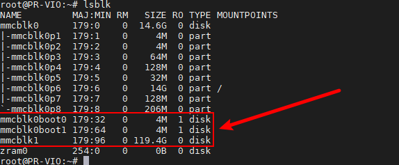
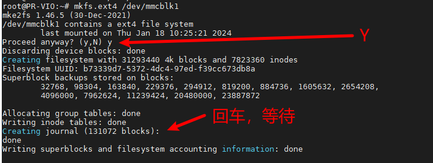
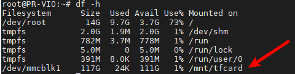
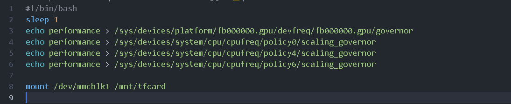

Viobot的TF卡挂载
将TF卡插到Viobot的卡槽里面，注意TF卡的存储速度。
1.查看TF卡
lsblk

可以看到新增了一个119.4G的存储块，也就是刚插进去的TF卡，名字是mmcblk1
Viobot系统不支NTFS格式的TF卡，需要存储大文件的化我们可以把TF卡格式化为EXT4格式，注意如果使用的内存卡不是空的，格式化之前，请自行备份保存好自己的文件。
2.格式化TF卡
sudo mkfs.ext4 /dev/mmcblk1

3.挂载
sudo mkdir /mnt/tfcard
sudo mount /dev/mmcblk1 /mnt/tfcard
查看挂载
df -h

可以看到/dev/mmcblk1已经被正确挂载到了/mnt/tfcard
4.卸载
sudo umount /dev/mmcblk1
5.开机自动挂载
挂载TF卡是一次性的，如果设备重启就需要重新挂载，如果需要开机挂载TF卡的话可以把先确保已经创建好了/mnt目录下的挂载文件夹，再把mount /dev/mmcblk1 /mnt/tfcard写到"/etc/user_setup/performance.sh"文件下的最后一行里面保存退出，重启即可。
